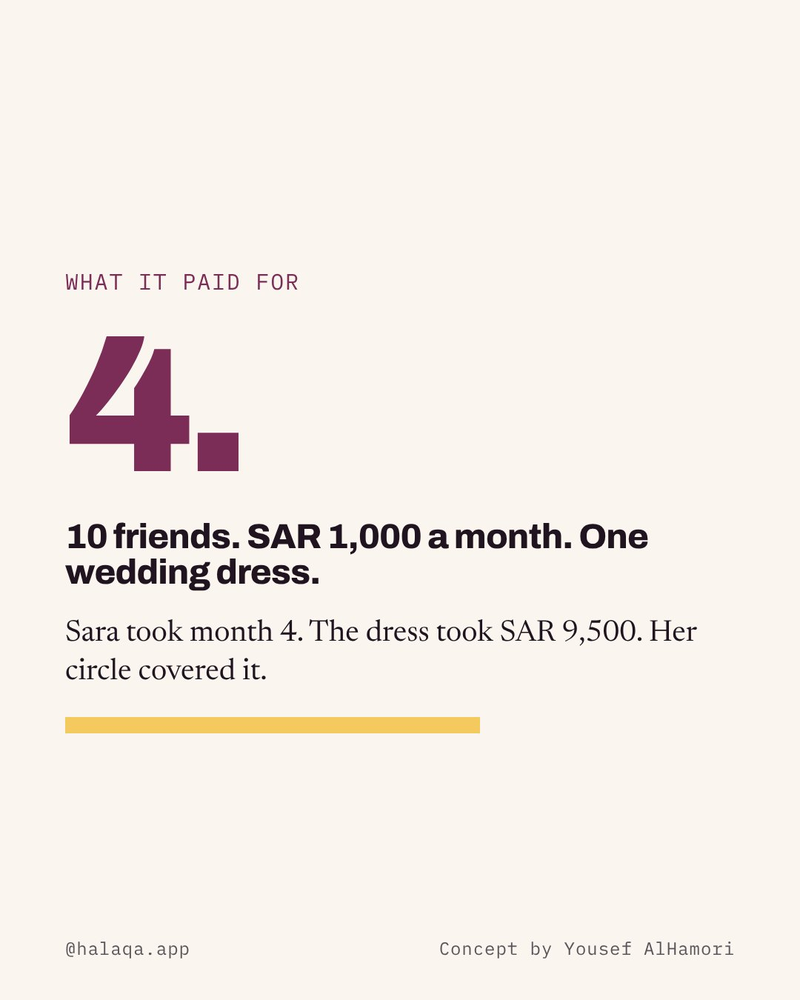
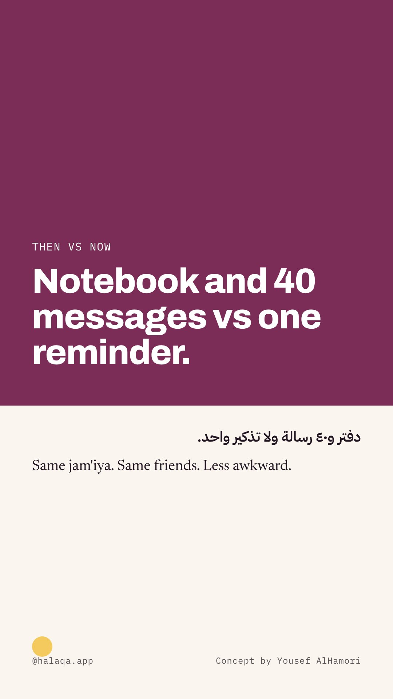

منشن الشخص اللي يطالب الكل كل شهر 😅 جا وقت يرتاح #ودّع_الدفتر #جمعية #حلقة
Jam'iya Life pillar: names the shared pain and drives tags to the campaign.
Halaqa celebrates the friend who always runs the jam'iya notebook, then retires the notebook for good.
Halaqa explains features with screenshots, but people join a jam'iya for the people, not the product. This concept starts from the most familiar character in every savings circle: the organizer chasing payments on WhatsApp. Followers nominate that friend, and Halaqa gives the group a reason to move into the app together.
Halaqa is a fictional brand I invented for this exercise. Names, prices and situations are made up; the research findings are real.
Three posts from the campaign, each with the caption as it would go out and the job it does. In production the framed areas become real photography or footage.


What the brand already does well on social, and the openings this plan goes after.
Reach 3,000 new active groups in Q1 2027, with 40% of signups tracked to social referral links.
Saudi professionals aged 23 to 35 in Jeddah and Riyadh who already run or join a jam'iya through a WhatsApp group.
In every jam'iya, one friend carries the awkwardness of asking everyone else for money.
Reach 3,000 new active groups in Q1 2027, with 40% of signups tracked to social referral links.
Sketches and memes about real jam'iya moments: the draw, the late payer, the group chat at 11pm.
Members share what their payout bought: a wedding dress, a car down payment, an Umrah trip.
Short, plain explainers on payouts, reminders, security and what happens if someone is late.
A recurring post on the 27th reminding groups their share is due.
| Platform | Role | Cadence |
|---|---|---|
| TikTok | Jam'iya Life sketches and the nomination trend. | 5 per week |
| Payout stories, explainer carousels and trust content. | 3 Reels and 2 carousels per week | |
| X | Joins money conversations on salary day and answers questions fast. | Daily, peak on the 27th |
| Snapchat | Reminder style snaps and ads for Saudi audiences under 30. | 3 per week |
Launches on salary day, 27 January 2027, when people set new year savings goals, and runs into Ramadan when many groups save for Eid.
Every jam'iya has an organizer with a worn notebook full of names, amounts and crossed out months. Halaqa thanks that person in public and retires the notebook, because the app now does the chasing.
How it spreadsFollowers tag their group's organizer with #ودّع_الدفتر. Groups that move into Halaqa get their first three months of Halaqa Plus free, and 50 organizers get their old notebook framed and sent back as a keepsake.
| Time | Visual | Audio / text |
|---|---|---|
| 0 to 4s | Close up of a worn spiral notebook: columns of names, amounts, ticks and one name circled in red. | On screen text: كل جمعية فيها دفتر |
| 4 to 9s | A young woman in an office in Jeddah types in a WhatsApp group: يا جماعة الله يرضى عليكم القسط اليوم. | Sound: typing, sent tick, then silence |
| 9 to 14s | Phone shows the message read by 9 people, no replies. She sighs and opens the notebook again. | VO (Hijazi, playful): وكل شهر نفس القصة. |
| 14 to 20s | She opens Halaqa. The app shows every member's share received and the next payout date. | VO: خلّي التطبيق يذكّرهم. Sound: soft notification chime |
| 20 to 26s | She closes the notebook, ties it with a ribbon and places it on a shelf like a trophy. | Music lifts, friends cheer off screen |
| 26 to 30s | Group selfie of the circle, phones up showing the app. Hashtag on screen. | On screen: ودّع الدفتر. منشن مسؤول جمعيتكم. #ودّع_الدفتر |
A two week calendar, the creators I would brief, and how the account answers people in the comments.
| Day | Platform | Format | Pillar | Post |
|---|---|---|---|---|
| W1 Sun | TikTok | Video | Jam'iya Life | Launch: Ten Years of Chasing |
| W1 Mon | Reel | Jam'iya Life | The 5 people in every jam'iya | |
| W1 Tue | X | Thread | How It Works | What happens if someone pays late |
| W1 Wed | Carousel | What It Paid For | Sara's wedding dress payout | |
| W1 Thu | TikTok | Video | Jam'iya Life | Who takes first: the draw drama |
| W2 Sun | Stories | Jam'iya Life | Repost tagged organizers with thank you notes | |
| W2 Mon | Snapchat | Snaps | How It Works | Set up a circle in 3 minutes |
| W2 Tue | TikTok | Video | What It Paid For | Umrah trip funded by a family circle |
| W2 Wed | Carousel | How It Works | Where your money sits between payouts | |
| W2 Thu | X | Post | Salary Day | 27th reminder with a meme |
| Tier | Creator type | Why them | The ask |
|---|---|---|---|
| Micro (10k to 50k) | Saudi comedy sketch creators who act out office life | The jam'iya organizer is a perfect recurring character for their style. | Two sketches built around the organizer, ending with the nomination hashtag |
| Mid (50k to 150k) | Arabic personal finance creators | They can explain trust, payouts and security credibly to a cautious audience. | One explainer Reel on how a digital jam'iya works and a live Q and A |
| Nano (2k to 10k) | Engaged couples documenting wedding prep | Weddings are the most common jam'iya goal and their followers are saving now. | A story series showing how their circle funds part of the wedding |
Proposed targets and the tests that would tell us what to change after week one.
| Metric | Target | Why it matters |
|---|---|---|
| New active groups | Target: 3,000 in Q1 2027 | Groups, not single downloads, are the real unit of growth. |
| Organizer nominations | Target: 4,000 tagged posts and comments | Measures how far the organizer insight travels. |
| Signups from social links | Target: 40% of new signups | Shows social is a real acquisition channel for the app. |
| Shares per sketch | Target: 5% of views on TikTok | Shares into group chats are how a jam'iya product spreads. |
Each major choice in this plan, matched to published research. Some studies cover the wider region or global audiences; the source says which. Full list on the research page.
Hakbah, a Saudi app that digitizes the jameya savings circle, reports more than 2 million registered users, about 70% of them aged 23 to 37, with short cycles peaking before Ramadan and Eid.
A Saudi app already has over 2 million users digitizing the jameya, mostly aged 23 to 37, which shows the habit is real and moving online.
Semafor, Saudi traditional savings circles go digital, 2026In a 2026 survey of brands, 52.83% plan to expand work with micro creators and 51.43% with nano creators, against 20.59% for macro creators.
Brands are shifting toward micro creators, and a relatable office sketch about chasing payments is the right way to explain a jam'iya app.
Influencer Marketing Hub, Influencer Marketing Benchmark Report 2026, 2026TikTok ads reached 38.6 million users aged 18 and above in Saudi Arabia in late 2025, the largest ad audience of any platform in the report (ad reach, not monthly active users).
TikTok has the largest ad reach among Saudi adults, which suits a new app that needs to be found.
DataReportal, Digital 2026: Saudi Arabia, 202573% of social users say they will buy from a competitor if a brand does not respond on social, and nearly three quarters expect a response within 24 hours or sooner.
A money app has to answer questions fast, and most users expect replies within a day or will go elsewhere.
Sprout Social, The 2025 Sprout Social Index: What consumers want on social, 2025Would jam'iya organizers in Jeddah and Riyadh move their WhatsApp group into an app if a friend tagged them in a relatable sketch?
150 person survey of current jam'iya members recruited through Instagram and X, followed by a 2 week TikTok sketch test
150 Saudi professionals aged 23 to 35 who run or join a jam'iya; 10 TikTok sketches
At least 50% say tracking payments is the hardest part, and sketches earn at least 1 organizer tag per 100 views